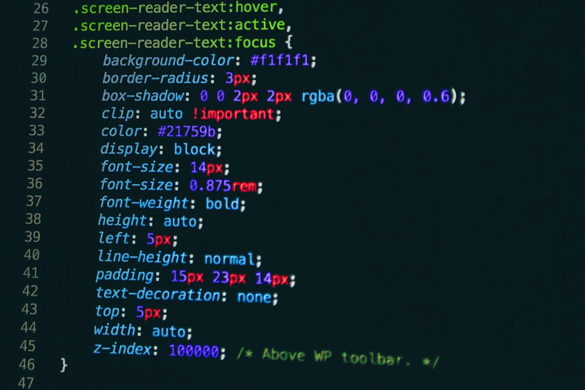

O membro Isabella teve problemas com a internet, mas ela fez a parte dela e o membro Matheus passou para o HTML. Sem dúvidas, esse foi o desafio mais demorado e complicado até agora, mas foi até satisfatório ver como nosso website ficou, e que foi feito por nós mesmos.
Fique aqui com nossos outros desafios concluídos:
Voltar a página principal